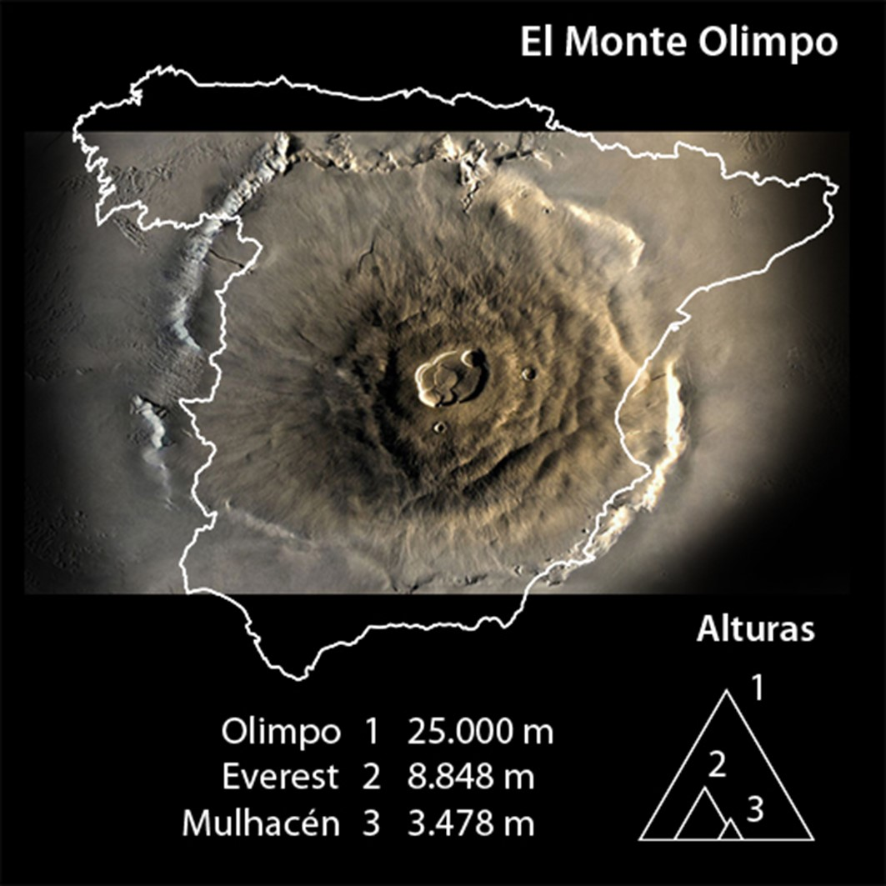
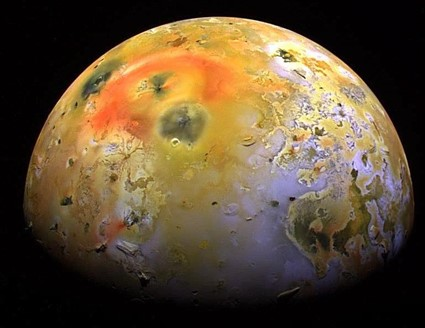

El volcán más grande del Sistema Solar
El Monte Olimpo,situado en el planeta Marte, se trata de un volcán
dado por apagado con una base de unos 600 km y más de 27 km de altura.
No obstante, este planeta parece tener cierta actividad volcánica
apreciable.
Cabe destacar que Venus también tiene un intenso vulcanismo con unos
cientos de miles de volcanes.
Nuestra Luna está cubierta de inmensos campos de basalto, lo que
sugiere que tuvo una corta pero considerable actividad volcánica que
hoy muy probablemente está extinta.

Monte Olimpo, Marte.
Criovolcánes
Debido a las bajas temperaturas del espacio, algunos volcanes de
nuestro sistema solar están formados de hielo que actúa como roca,
mientras su agua líquida interna actúa como la magma; esto ocurre -por
ejemplo- en la fría luna de Júpiter llamada Europa. Estos reciben el
nombre de criovolcán, de los cuales hay también en Encélado. La
Voyager 2 descubrió en agosto de 1989, sobre Tritón, rastros de
criovulcanismo y géiseres. La búsqueda de vida extraterrestre se ha
interesado en buscar rastros de vida en sistemas criovolcánicos donde
hay agua líquida y por ende, una fuente de radiación en calor
considerable; estos son elementos esenciales para la vida.

Volcán de Tritón.
Volcanes similares a los de la tierra
Existen volcanes un poco más similares a los terrestres, sobre otros
satélites de Júpiter como en el caso de Ío. La sonda Voyager 1
permitió fotografiar en marzo de 1979 una erupción en Ío. Los
astrofísicos estudian los datos de esta información, que extiende el
campo de estudio de la vulcanología. El conocimiento del fenómeno tal
como se produce sobre la Tierra pasa en adelante por su estudio en el
espacio.
La temperatura y composición química de los volcanes del sistema solar
varían considerablemente entre los planetas y los satélites. Además,
el tipo de materiales que arrojan en sus erupciones es muy diferente
de los arrojados en la Tierra.

Vulcanismo en Ío